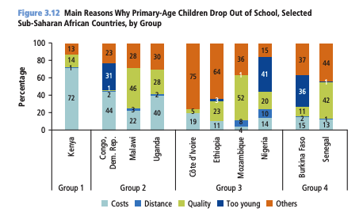
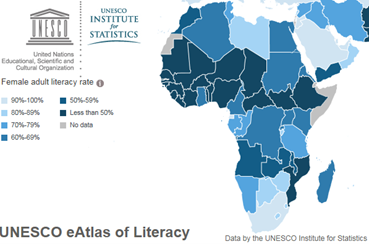

GI BARN LIVSVIKTIG SKOLEGANG
"Utdanning er både en rettighet i seg selv, og nødvendig
for å nå de andre bærekraftsmålene. For eksempel er det færre
som utsettes for barnearbeid, og færre som blir utnyttet av voksne,
når de får en utdanning. På skolen lærer barna om rettighetene sine,
og møter voksne de kan snakke med hvis de opplever vonde ting."
- FN
Problemet
Landene sør for Sahara har de høyeste ratene for skolefravær. I følge UIS og UNESCO er ca. 60% av barn mellom 12-17 år utenfor skolen. Dette tilsvarer nærmest 100 millioner barn, 1/3 av alle i hele verden.
Det er mange ulike faktorer til hvorfor ungdommen sør for Sahara dropper ut, og mange av dem henger sammen. Fattigdom, mangelen på infrastruktur og kvalitet på skolen er sentrale problemer. Som følge av dette føler mange seg tvunget til å droppe ut av skolen. Flere familier holder ungdommene hjemme for å gjøre arbeid eller passe familien, men trenger det å være slik?
Vår løsning
Registrering av oppmøte er svært viktig for å holde styr på fraværet til elevene. Når fraværet skal føres får skolene en mal som inneholder fraværstimer, årsker osv. Fraværspapirene samles opp og sendes til et hovudkontor. Her blir dataen digitalisert og analysert. Analysen blir deretter brukt til å kartlegge hvordan og hvem som skal bli belønnet! Den kan også brukes til å identifisere problem på skolene ved å se på fraværsårsakene. Belønningen vil gå til skolene med minst fravær. For å unngå store skiller vil skolene bli delt opp i ulike «nivåer» i forhold til hvor de ligger an fra tidligere. Tidligere belønnet skoler vil hjelpe andre skoler som sliter, ved besøk og motivasjon. Belønningene blir laget ut ifra hva behovene er, om det er vann, elektrisitet, automatisering av jordbruk etc.
Støtt vårt arbeid